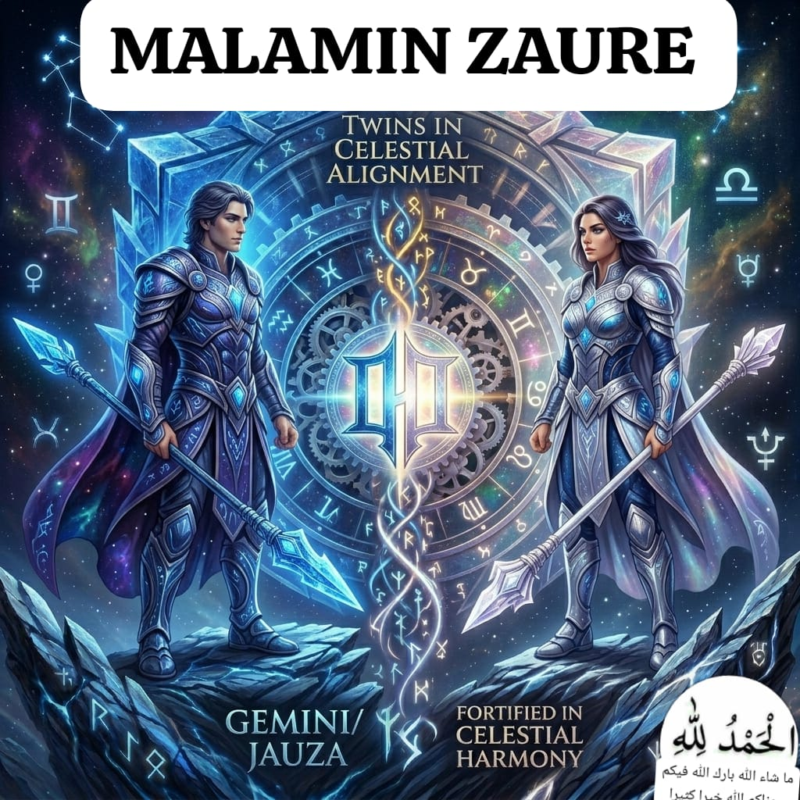

Burujin Jauza (Gemini) ♊
Burujin Jauza, wanda a turance aka sani da Gemini, shi ne buruji na uku a jerin burujai guda goma sha biyu. Wannan buruji yana dauke da siffar tagwaye, wanda ke nuna zurfin tunani, saurin fahimta, da kuma iya zama da mutane daban-daban.
Dabi'arsa da Kaukabinsa
Dabi'arsa: Iska (Air). Wannan ya sa masu wannan burujin suke da saurin motsi, son canji, da kuma bayyana ra'ayi. Ba sa son zama waje daya, suna son bincike da koyon sababbin abubuwa.
Kaukabinsa: Utarid (Mercury). Wannan kaukabin shi ne ke kula da sadarwa (communication), ilimi, rubutu, da basira. Shi ya sa mutanen Jauza suka kware a wajen magana da tsara bayanai.
Ranar Sa'arsa da Dalili
Ranar sa'ar masu burujin Jauza ita ce Ranar Laraba. Dalili kuwa shi ne, kaukabin Utarid wanda yake mulkin wannan burujin, yana da karfi da tasiri matuka a ranar Laraba a ma'aunin ilimin falaki. Duk wani muhimmin aiki ko neman nasara yana da kyau su fara shi a wannan ranar.
Sana'o'in da Suka Dace
- Aikin Jarida da Watsa Labarai: Saboda kwarewarsu a magana da sadarwa.
- Koyantarwa (Teaching): Suna da fasahar fahimtarwa cikin sauki.
- Kasuwanci da Dillanci: Suna da saurin shawo kan mutane masu saye.
- Injiniyan Kwamfuta / Web Development: Saboda kwakwalwarsu tana aiki sosai wajen warware matsaloli (problem-solving).
Sadaka da Turarensa
Sadaka: Don samun budi da nasara, ana so mai wannan burujin ya dinga yin sadaka da abubuwan da suka shafi ilimi kamar alkalami, littattafai, ko kuma kyautar farin kaya ga mabukata.
Turare: Turaren 'Sandal' da 'Jasmine' suna taimakawa wajen natsuwar tunaninsu da bude musu kofofin sa'a.
Addu'o'i da Sirrin Nasara
Sirrin nasarar Jauza shine Natsuwa (Focus). Saboda yawan tunaninsu yana iya sa su yi abubuwa da yawa a lokaci guda ba tare da kammala daya ba. Addu'ar da ta fi dacewa da su ita ce yawaita ambaton Sunayen Allah: "Ya 'Alim, Ya Khabir" (Masanin Komai, Mai ba da Labarin Komai) saboda samun ilimi mai amfani da kuma nutsuwa a cikin al'amura.